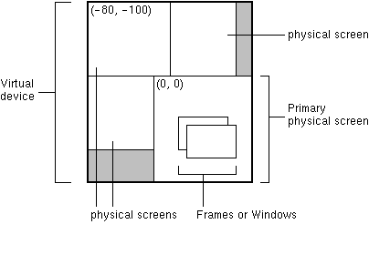

public class Frame extends Window implements MenuContainer
Frame是一个带有标题和边框的顶层窗口。
该框架的大小包括指定的边界的任何区域。边境地区的尺寸可以获得使用getInsets方法，然而，由于这些尺寸是依赖于平台的，直到框架通过调用pack或show得到了显示的是一个有效的插入值不能。由于边境地区是包括在框架的整体尺寸，边界有效地掩盖了框架的一部分，制约可渲染和/或矩形的左上角位置的(insets.left, insets.top)显示组件的面积，并通过height - (insets.top + insets.bottom)大小width - (insets.left + insets.right)。
一帧的默认布局BorderLayout。
一个框架可能有其天然的装饰品（即Frame和Titlebar）关掉setUndecorated。这只能在框架不displayable。
在多屏幕环境，你可以通过构建Frame(GraphicsConfiguration)或Frame(String title, GraphicsConfiguration)的Frame创建一个不同的屏幕设备的Frame。这是一个GraphicsConfiguration对象的目标对象的GraphicsConfiguration屏幕装置。
在一个虚拟设备的多屏幕环境中，桌面区域可以跨越多个物理屏幕设备，所有配置的边界都是相对于虚拟坐标系统。虚拟坐标系的原点位于初级物理屏幕的左上角位置。根据虚拟设备中的主屏幕的位置，负坐标是可能的，如下图所示。

在这样的环境中，当调用setLocation，你必须通过一个虚拟坐标的方法。同样，在Frame调用getLocationOnScreen返回虚拟设备坐标。打电话给一个GraphicsConfiguration的getBounds方法在虚拟坐标系中找到它的起源。
下面的代码设置的Frame位置在（10，10）相对于相应的GraphicsConfiguration物理屏幕的起源。如果GraphicsConfiguration的界限是不考虑的Frame位置将定在（10，10）相对于虚拟坐标系统，会出现在主要的物理屏幕，这可能是不同的从指定的GraphicsConfiguration物理屏幕。
架F =新的框架（graphicsconfiguration GC）；矩形边界= getbounds() GC；f.setlocation（10 + 10 +界限。X、Y的范围。）；
框架是能够产生以下类型的WindowEvents：
WINDOW_OPENEDWINDOW_CLOSING：WINDOW_CLOSEDWINDOW_ICONIFIEDWINDOW_DEICONIFIEDWINDOW_ACTIVATEDWINDOW_DEACTIVATEDWINDOW_GAINED_FOCUSWINDOW_LOST_FOCUSWINDOW_STATE_CHANGEDWindowEvent，
Window.addWindowListener(java.awt.event.WindowListener)，
Serialized Form
| Modifier and Type | Class and Description |
|---|---|
protected class |
Frame.AccessibleAWTFrame
这个类实现了对
Frame类可访问性支持。
|
Window.AccessibleAWTWindow, Window.TypeContainer.AccessibleAWTContainerComponent.AccessibleAWTComponent, Component.BaselineResizeBehavior, Component.BltBufferStrategy, Component.FlipBufferStrategy| Modifier and Type | Field and Description |
|---|---|
static int |
CROSSHAIR_CURSOR
过时的。
取而代之的
Cursor.CROSSHAIR_CURSOR。
|
static int |
DEFAULT_CURSOR
过时的。
取而代之的
Cursor.DEFAULT_CURSOR。
|
static int |
E_RESIZE_CURSOR
过时的。
取而代之的
Cursor.E_RESIZE_CURSOR。
|
static int |
HAND_CURSOR
过时的。
取而代之的
Cursor.HAND_CURSOR。
|
static int |
ICONIFIED
这种状态位表示框架图标化。
|
static int |
MAXIMIZED_BOTH
这种状态位掩码表示帧完全最大化（即水平和垂直方向）。
|
static int |
MAXIMIZED_HORIZ
该状态位表示该帧在水平方向上最大化。
|
static int |
MAXIMIZED_VERT
该状态位表示该帧在垂直方向上最大化。
|
static int |
MOVE_CURSOR
过时的。
取而代之的
Cursor.MOVE_CURSOR。
|
static int |
N_RESIZE_CURSOR
过时的。
取而代之的
Cursor.N_RESIZE_CURSOR。
|
static int |
NE_RESIZE_CURSOR
过时的。
取而代之的
Cursor.NE_RESIZE_CURSOR。
|
static int |
NORMAL
框架是在“正常”的状态。
|
static int |
NW_RESIZE_CURSOR
过时的。
取而代之的
Cursor.NW_RESIZE_CURSOR。
|
static int |
S_RESIZE_CURSOR
过时的。
取而代之的
Cursor.S_RESIZE_CURSOR。
|
static int |
SE_RESIZE_CURSOR
过时的。
取而代之的
Cursor.SE_RESIZE_CURSOR。
|
static int |
SW_RESIZE_CURSOR
过时的。
取而代之的
Cursor.SW_RESIZE_CURSOR。
|
static int |
TEXT_CURSOR
过时的。
取而代之的
Cursor.TEXT_CURSOR。
|
static int |
W_RESIZE_CURSOR
过时的。
取而代之的
Cursor.W_RESIZE_CURSOR。
|
static int |
WAIT_CURSOR
过时的。
取而代之的
Cursor.WAIT_CURSOR。
|
accessibleContext, BOTTOM_ALIGNMENT, CENTER_ALIGNMENT, LEFT_ALIGNMENT, RIGHT_ALIGNMENT, TOP_ALIGNMENTABORT, ALLBITS, ERROR, FRAMEBITS, HEIGHT, PROPERTIES, SOMEBITS, WIDTH| Constructor and Description |
|---|
Frame()
构建了一个新的实例
Frame最初是无形的。
|
Frame(GraphicsConfiguration gc)
构建一个新的隐形
Frame最初与指定的
GraphicsConfiguration。
|
Frame(String title)
构建一个新
Frame最初无形对象的指定标题。
|
Frame(String title, GraphicsConfiguration gc)
构建了一个新的开始，看不见的
Frame对象和指定的标题和
GraphicsConfiguration。
|
| Modifier and Type | Method and Description |
|---|---|
void |
addNotify()
使这个框架可显示通过连接到一个本地网资源。
|
AccessibleContext |
getAccessibleContext()
获取与此相关的accessiblecontext框架。
|
int |
getCursorType()
过时的。
作为JDK 1.1版本，取而代之的
Component.getCursor()。
|
int |
getExtendedState()
获取此帧的状态。
|
static Frame[] |
getFrames()
返回此应用程序创建的所有
Frames数组。
|
Image |
getIconImage()
返回要显示为该帧的图标的图像。
|
Rectangle |
getMaximizedBounds()
获取此帧的最大限度。
|
MenuBar |
getMenuBar()
获取此框架的菜单栏。
|
int |
getState()
获取此帧的状态（已过时）。
|
String |
getTitle()
获取帧的标题。
|
boolean |
isResizable()
指示此框可调整大小的用户。
|
boolean |
isUndecorated()
指示此框架装饰。
|
protected String |
paramString()
返回一个字符串，表示此
Frame状态。
|
void |
remove(MenuComponent m)
从该帧中移除指定的菜单栏。
|
void |
removeNotify()
使这个框架不可显示去除其连接到其本地网资源。
|
void |
setBackground(Color bgColor)
设置此窗口的背景颜色。
|
void |
setCursor(int cursorType)
过时的。
作为JDK 1.1版本，取而代之的
Component.setCursor(Cursor)。
|
void |
setExtendedState(int state)
设置此帧的状态。
|
void |
setIconImage(Image image)
设置要显示为该窗口的图标的图像。
|
void |
setMaximizedBounds(Rectangle bounds)
设置此帧的最大限度。
|
void |
setMenuBar(MenuBar mb)
将此框的菜单栏设置为指定的菜单栏。
|
void |
setOpacity(float opacity)
设置窗口的不透明度。
|
void |
setResizable(boolean resizable)
设置是否该框架是由用户调整大小。
|
void |
setShape(Shape shape)
设置窗口的形状。
|
void |
setState(int state)
设置此帧的状态（已过时）。
|
void |
setTitle(String title)
将此框的标题设置为指定的字符串。
|
void |
setUndecorated(boolean undecorated)
禁用或启用此框架的装饰。
|
addPropertyChangeListener, addPropertyChangeListener, addWindowFocusListener, addWindowListener, addWindowStateListener, applyResourceBundle, applyResourceBundle, createBufferStrategy, createBufferStrategy, dispose, getBackground, getBufferStrategy, getFocusableWindowState, getFocusCycleRootAncestor, getFocusOwner, getFocusTraversalKeys, getIconImages, getInputContext, getListeners, getLocale, getModalExclusionType, getMostRecentFocusOwner, getOpacity, getOwnedWindows, getOwner, getOwnerlessWindows, getShape, getToolkit, getType, getWarningString, getWindowFocusListeners, getWindowListeners, getWindows, getWindowStateListeners, hide, isActive, isAlwaysOnTop, isAlwaysOnTopSupported, isAutoRequestFocus, isFocusableWindow, isFocusCycleRoot, isFocused, isLocationByPlatform, isOpaque, isShowing, isValidateRoot, pack, paint, postEvent, processEvent, processWindowEvent, processWindowFocusEvent, processWindowStateEvent, removeWindowFocusListener, removeWindowListener, removeWindowStateListener, reshape, setAlwaysOnTop, setAutoRequestFocus, setBounds, setBounds, setCursor, setFocusableWindowState, setFocusCycleRoot, setIconImages, setLocation, setLocation, setLocationByPlatform, setLocationRelativeTo, setMinimumSize, setModalExclusionType, setSize, setSize, setType, setVisible, show, toBack, toFrontadd, add, add, add, add, addContainerListener, addImpl, applyComponentOrientation, areFocusTraversalKeysSet, countComponents, deliverEvent, doLayout, findComponentAt, findComponentAt, getAlignmentX, getAlignmentY, getComponent, getComponentAt, getComponentAt, getComponentCount, getComponents, getComponentZOrder, getContainerListeners, getFocusTraversalPolicy, getInsets, getLayout, getMaximumSize, getMinimumSize, getMousePosition, getPreferredSize, insets, invalidate, isAncestorOf, isFocusCycleRoot, isFocusTraversalPolicyProvider, isFocusTraversalPolicySet, layout, list, list, locate, minimumSize, paintComponents, preferredSize, print, printComponents, processContainerEvent, remove, remove, removeAll, removeContainerListener, setComponentZOrder, setFocusTraversalKeys, setFocusTraversalPolicy, setFocusTraversalPolicyProvider, setFont, setLayout, transferFocusDownCycle, update, validate, validateTreeaction, add, addComponentListener, addFocusListener, addHierarchyBoundsListener, addHierarchyListener, addInputMethodListener, addKeyListener, addMouseListener, addMouseMotionListener, addMouseWheelListener, bounds, checkImage, checkImage, coalesceEvents, contains, contains, createImage, createImage, createVolatileImage, createVolatileImage, disable, disableEvents, dispatchEvent, enable, enable, enableEvents, enableInputMethods, firePropertyChange, firePropertyChange, firePropertyChange, firePropertyChange, firePropertyChange, firePropertyChange, firePropertyChange, firePropertyChange, firePropertyChange, getBaseline, getBaselineResizeBehavior, getBounds, getBounds, getColorModel, getComponentListeners, getComponentOrientation, getCursor, getDropTarget, getFocusListeners, getFocusTraversalKeysEnabled, getFont, getFontMetrics, getForeground, getGraphics, getGraphicsConfiguration, getHeight, getHierarchyBoundsListeners, getHierarchyListeners, getIgnoreRepaint, getInputMethodListeners, getInputMethodRequests, getKeyListeners, getLocation, getLocation, getLocationOnScreen, getMouseListeners, getMouseMotionListeners, getMousePosition, getMouseWheelListeners, getName, getParent, getPeer, getPropertyChangeListeners, getPropertyChangeListeners, getSize, getSize, getTreeLock, getWidth, getX, getY, gotFocus, handleEvent, hasFocus, imageUpdate, inside, isBackgroundSet, isCursorSet, isDisplayable, isDoubleBuffered, isEnabled, isFocusable, isFocusOwner, isFocusTraversable, isFontSet, isForegroundSet, isLightweight, isMaximumSizeSet, isMinimumSizeSet, isPreferredSizeSet, isValid, isVisible, keyDown, keyUp, list, list, list, location, lostFocus, mouseDown, mouseDrag, mouseEnter, mouseExit, mouseMove, mouseUp, move, nextFocus, paintAll, prepareImage, prepareImage, printAll, processComponentEvent, processFocusEvent, processHierarchyBoundsEvent, processHierarchyEvent, processInputMethodEvent, processKeyEvent, processMouseEvent, processMouseMotionEvent, processMouseWheelEvent, removeComponentListener, removeFocusListener, removeHierarchyBoundsListener, removeHierarchyListener, removeInputMethodListener, removeKeyListener, removeMouseListener, removeMouseMotionListener, removeMouseWheelListener, removePropertyChangeListener, removePropertyChangeListener, repaint, repaint, repaint, repaint, requestFocus, requestFocus, requestFocusInWindow, requestFocusInWindow, resize, resize, revalidate, setComponentOrientation, setDropTarget, setEnabled, setFocusable, setFocusTraversalKeysEnabled, setForeground, setIgnoreRepaint, setLocale, setMaximumSize, setName, setPreferredSize, show, size, toString, transferFocus, transferFocusBackward, transferFocusUpCycleclone, equals, finalize, getClass, hashCode, notify, notifyAll, wait, wait, waitgetFont, postEvent@Deprecated public static final int DEFAULT_CURSOR
Cursor.DEFAULT_CURSOR。
@Deprecated public static final int CROSSHAIR_CURSOR
Cursor.CROSSHAIR_CURSOR。
@Deprecated public static final int TEXT_CURSOR
Cursor.TEXT_CURSOR。
@Deprecated public static final int WAIT_CURSOR
Cursor.WAIT_CURSOR。
@Deprecated public static final int SW_RESIZE_CURSOR
Cursor.SW_RESIZE_CURSOR。
@Deprecated public static final int SE_RESIZE_CURSOR
Cursor.SE_RESIZE_CURSOR。
@Deprecated public static final int NW_RESIZE_CURSOR
Cursor.NW_RESIZE_CURSOR。
@Deprecated public static final int NE_RESIZE_CURSOR
Cursor.NE_RESIZE_CURSOR。
@Deprecated public static final int N_RESIZE_CURSOR
Cursor.N_RESIZE_CURSOR。
@Deprecated public static final int S_RESIZE_CURSOR
Cursor.S_RESIZE_CURSOR。
@Deprecated public static final int W_RESIZE_CURSOR
Cursor.W_RESIZE_CURSOR。
@Deprecated public static final int E_RESIZE_CURSOR
Cursor.E_RESIZE_CURSOR。
@Deprecated public static final int HAND_CURSOR
Cursor.HAND_CURSOR。
@Deprecated public static final int MOVE_CURSOR
Cursor.MOVE_CURSOR。
public static final int NORMAL
public static final int ICONIFIED
public static final int MAXIMIZED_HORIZ
setExtendedState(int)，
getExtendedState()，
Constant Field Values
public static final int MAXIMIZED_VERT
setExtendedState(int)，
getExtendedState()，
Constant Field Values
public static final int MAXIMIZED_BOTH
MAXIMIZED_VERT | MAXIMIZED_HORIZ便利。
请注意，正确的框架被最大化的测试是
（国家和框架。maximized_both）= = frame.maximized_both
测试是在某些方向上最大化的使用
（国家和框架。maximized_both）！= 0
setExtendedState(int)，
getExtendedState()，
Constant Field Values
public Frame()
throws HeadlessException
Frame最初是无形的。
Frame标题是空的。
HeadlessException当
GraphicsEnvironment.isHeadless()返回
true
GraphicsEnvironment.isHeadless()，
Component.setSize(int, int)，
Component.setVisible(boolean)
public Frame(GraphicsConfiguration gc)
Frame最初与指定的
GraphicsConfiguration。
gc -目标屏幕装置的
GraphicsConfiguration。如果
gc是
null，系统默认的
GraphicsConfiguration假定。
IllegalArgumentException -如果
gc不是从一个屏幕的设备。
HeadlessException当
GraphicsEnvironment.isHeadless()返回
true
GraphicsEnvironment.isHeadless()
public Frame(String title) throws HeadlessException
Frame最初无形对象的指定标题。
title -标题是在框架的边框显示。一个
null值为空字符串“”。
HeadlessException当
GraphicsEnvironment.isHeadless()返回
true
GraphicsEnvironment.isHeadless()，
Component.setSize(int, int)，
Component.setVisible(boolean)，
GraphicsConfiguration.getBounds()
public Frame(String title, GraphicsConfiguration gc)
Frame对象和指定的标题和
GraphicsConfiguration。
title -标题是在框架的边框显示。一个
null值为空字符串“”。
gc -目标屏幕装置的
GraphicsConfiguration。如果
gc是
null，系统默认的
GraphicsConfiguration假定。
IllegalArgumentException -如果
gc不是从一个屏幕的设备。
HeadlessException当
GraphicsEnvironment.isHeadless()返回
true
GraphicsEnvironment.isHeadless()，
Component.setSize(int, int)，
Component.setVisible(boolean)，
GraphicsConfiguration.getBounds()
public void addNotify()
addNotify 方法重写，继承类
Window
Component.isDisplayable()，
removeNotify()
public String getTitle()
setTitle(String)
public void setTitle(String title)
title -标题是在框架的边框显示。一个
null值为空字符串“”。
getTitle()
public Image getIconImage()
这种方法是过时的，只保留向后兼容性。使用Window.getIconImages()相反。
如果将多个图像的列表指定为窗口的图标，该方法将返回列表的第一个项目。
null如果这架没有图标图像。
setIconImage(Image)，
Window.getIconImages()，
Window.setIconImages(java.util.List<? extends java.awt.Image>)
public void setIconImage(Image image)
这种方法可以用来代替setIconImages()指定一个图像作为一个窗口的图标。
以下声明：
seticonimage（图像）；等价于：
ArrayList
<图像>
图像>，< ImageList =新的ArrayList（）；ImageList添加（图像）；seticonimages（ImageList）；
注：本机窗口系统可以使用不同尺寸不同的图像代表一个窗口，根据上下文（例如窗花、窗口列表、任务栏等）。他们也可以只使用一个单一的图像的所有上下文或没有图像在所有。
setIconImage 方法重写，继承类
Window
image的图标图像显示。
Window.setIconImages(java.util.List<? extends java.awt.Image>)，
Window.getIconImages()
public MenuBar getMenuBar()
null如果这架没有菜单栏。
setMenuBar(MenuBar)
public void setMenuBar(MenuBar mb)
mb -菜单栏设置。如果这个参数是
null然后任何现有的菜单栏，这个帧被删除。
getMenuBar()
public boolean isResizable()
true如果用户可以调整这个框架；
false否则。
setResizable(boolean)
public void setResizable(boolean resizable)
resizable -
true如果这架可调整大小；
false否则。
isResizable()
public void setState(int state)
在旧版本的JDK的一帧的状态只可能是正常或图标化。由于美国支持的框架集和框架扩展JDK 1.4的状态被表示为位掩码。
为了兼容的应用程序开发较早，该方法仍接受Frame.NORMAL和Frame.ICONIFIED只。该框架的标志性状态是唯一改变的，其他方面的帧状态不会受到这种方法的影响。如果国家通过这种方法既Frame.NORMAL也Frame.ICONIFIED方法执行没有任何行动。
注意，如果国家不支持在一个给定的平台，无论是国家还是getState()方法的返回值将被改变。应用程序可以决定是否一个特定的状态是通过Toolkit.isFrameStateSupported(int)方法支持。
如果框架目前在屏幕上可见（的Window.isShowing()方法返回true），开发者应该检查的WindowEvent的WindowEvent.getNewState()方法返回值通过WindowStateListener确定国家实际上已经改变了。
如果框架在屏幕上不可见，事件可能会或可能不会产生。在这种情况下，开发人员可以假定该方法返回后立即进行状态更改。后来，当setVisible(true)方法被调用时，框架将尝试将这种状态。接受任何WindowEvent.WINDOW_STATE_CHANGED事件不能保证在这种情况下。
state -
Frame.NORMAL或
Frame.ICONIFIED。
setExtendedState(int)，
Window.addWindowStateListener(java.awt.event.WindowStateListener)
public void setExtendedState(int state)
NORMAL ICONIFIEDMAXIMIZED_HORIZMAXIMIZED_VERTMAXIMIZED_BOTH MAXIMIZED_HORIZ和MAXIMIZED_VERT。注意，如果国家不支持在一个给定的平台，无论是国家还是getExtendedState()方法的返回值将被改变。应用程序可以决定是否一个特定的状态是通过Toolkit.isFrameStateSupported(int)方法支持。
如果框架目前在屏幕上可见（的Window.isShowing()方法返回true），开发者应该检查的WindowEvent的WindowEvent.getNewState()方法返回值通过WindowStateListener确定国家实际上已经改变了。
如果框架在屏幕上不可见，事件可能会或可能不会产生。在这种情况下，开发人员可以假定该方法返回后立即进行状态更改。后来，当setVisible(true)方法被调用时，框架将尝试将这种状态。接受任何WindowEvent.WINDOW_STATE_CHANGED事件不能保证在这种情况下。
state -帧状态常数的位掩码
Window.addWindowStateListener(java.awt.event.WindowStateListener)
public int getState()
在旧版本的JDK的一帧的状态只可能是正常或图标化。由于美国支持的框架集和框架扩展JDK 1.4的状态被表示为位掩码。
为了兼容旧的程序，这种方法仍然返回Frame.NORMAL和Frame.ICONIFIED但它只报告框架的标志性状态，帧状态等方面都不报告的方法。
Frame.NORMAL或
Frame.ICONIFIED。
setState(int)，
getExtendedState()
public int getExtendedState()
NORMAL ICONIFIEDMAXIMIZED_HORIZMAXIMIZED_VERTMAXIMIZED_BOTH MAXIMIZED_HORIZ和MAXIMIZED_VERT。setExtendedState(int)
public void setMaximizedBounds(Rectangle bounds)
当一个框架处于最大化状态时，系统提供了一些默认的界限。这种方法允许一些或所有这些系统提供的值被覆盖。
如果bounds是null，接受系统提供的界限。如果non-null可以重写一些系统提供的值，通过设置那些你想接受系统Integer.MAX_VALUE领域接受别人。
注意，给定的最大限度的界限被用作本地系统的提示，因为底层的平台可能不支持设置最大化窗口的位置和/或大小。如果是这样的情况下，所提供的值不影响在最大化状态下的帧的外观。
bounds -边界为最大化状态
getMaximizedBounds()
public Rectangle getMaximizedBounds()
Integer.MAX_VALUE表明系统提供的值，该字段必须使用。
null框架；
setMaximizedBounds(Rectangle)
public void setUndecorated(boolean undecorated)
这种方法只能在框架不可显示的要求。使这个框架装饰，它必须是不透明的，默认的形状，否则将抛出IllegalComponentStateException。参考Window.setShape(java.awt.Shape)，详情Window.setOpacity(float)和Window.setBackground(java.awt.Color)
undecorated -
true如果无框装饰要启用；
false如果框架装饰要启用
IllegalComponentStateException如果框可显示
IllegalComponentStateException -如果
undecorated是
false，这架没有默认的形状
IllegalComponentStateException -如果
undecorated是
false，这帧不透明度小于
1.0f
IllegalComponentStateException -如果
undecorated是
false，和这个框架的背景颜色的alpha值小于
1.0f
isUndecorated()，
Component.isDisplayable()，
Window.getShape()，
Window.getOpacity()，
Window.getBackground()，
JFrame.setDefaultLookAndFeelDecorated(boolean)
public boolean isUndecorated()
true如果框架
false否则未修饰。
setUndecorated(boolean)
public void setOpacity(float opacity)
的不透明度值是在范围[ 0 .. 1 ]。请注意，设置0的不透明度级别可能或可能不会在这个窗口中禁用鼠标事件处理。这是一个平台依赖的行为。
必须满足以下条件才能设置透明度值小于1.0f：
TRANSLUCENT必须由底层系统支持setUndecorated(boolean)和Dialog.setUndecorated(boolean)）GraphicsDevice.setFullScreenWindow(Window)）如果请求的不透明度值小于1.0f，与上述任何条件都不具备，窗口透明度不会改变，并将引发IllegalComponentStateException。
个别像素的透明度水平也可以通过他们的颜色的alpha分量的影响（见Window.setBackground(Color)）和当前窗口的形状（见Window.setShape(Shape)）。
public void setShape(Shape shape)
设置一个形状从窗口的某些部分切断。只有部分属于给定的Shape保持可见和可点击。如果形状参数是null，此方法恢复默认的形状，使窗口矩形在大多数平台。
必须满足下列条件，以设置非空形状：
PERPIXEL_TRANSPARENT必须由底层系统支持setUndecorated(boolean)和Dialog.setUndecorated(boolean)）GraphicsDevice.setFullScreenWindow(Window)）如果请求的形状不null，及任何上述条件不满足，这个窗口的形状不会改变，无论是UnsupportedOperationException或IllegalComponentStateException将抛出。
个别像素的透明度水平也可以通过他们的颜色的alpha分量的影响（见Window.setBackground(Color)）和不透明度值（见Window.setOpacity(float)）。更多细节见GraphicsDevice.WindowTranslucency。
public void setBackground(Color bgColor)
如果视窗系统支持PERPIXEL_TRANSLUCENT半透明的背景颜色的alpha分量可能这个窗口操作模式的影响：它指示这个窗口必须是不透明的（α等于1.0f）或每像素半透明（α小于1.0f）。如果给定的背景颜色是null，窗户是完全不透明的。
必须满足所有以下条件，以使该窗口的每个像素的透明度模式：
PERPIXEL_TRANSLUCENT必须支持的图形设备，该窗口位于setUndecorated(boolean)和Dialog.setUndecorated(boolean)）GraphicsDevice.setFullScreenWindow(Window)）如果请求的背景颜色的alpha分量小于1.0f，及任何上述条件不满足，这个窗口的背景颜色不会改变，alpha分量的给定的背景颜色不会影响此窗口的操作模式，无论是UnsupportedOperationException或IllegalComponentStateException将抛出。
当窗口是每一个像素的半透明，绘图子系统尊重每个单独的像素的α值。如果一个像素得到与阿尔法颜色分量等于零，它成为视觉上透明。如果该像素的alpha等于1.0f，像素是完全不透明的。阿尔法颜色组件的临时值使像素半透明。在这种模式下，窗口的背景画与给定的背景颜色的α值。如果这个方法的参数α值等于0，背景不画在所有。
对一个给定的像素透明度的实际水平，也取决于窗口的不透明度（见Window.setOpacity(float)），以及当前窗口的形状（见Window.setShape(Shape)）。
注意，画一个像素的alpha值0可能或不可能禁用鼠标事件对该像素处理。这是一个平台依赖的行为。为了确保鼠标事件不会被发送到一个特定的像素，该像素必须被排除在窗口的形状之外。
使每个像素的透明度模式可能会改变这个窗口的图形组态由于本地平台的要求。
setBackground 方法重写，继承类
Window
bgColor的色彩成为这个窗口的背景颜色。
Window.getBackground()，
Window.isOpaque()，
Window.setOpacity(float)，
Window.setShape(Shape)，
isUndecorated()，
Dialog.isUndecorated()，
GraphicsDevice.WindowTranslucency，
GraphicsDevice.isWindowTranslucencySupported(GraphicsDevice.WindowTranslucency)，
GraphicsConfiguration.isTranslucencyCapable()
public void remove(MenuComponent m)
remove 接口
MenuContainer
remove 方法重写，继承类
Component
m -删除菜单组件。如果
m是
null，再不采取行动
Component.add(PopupMenu)
public void removeNotify()
removeNotify 方法重写，继承类
Window
Component.isDisplayable()，
addNotify()
protected String paramString()
Frame状态。此方法仅用于调试目的，返回的字符串的内容和格式可能会在实现过程中有所不同。返回的字符串是空的但可能不
null。
paramString 方法重写，继承类
Container
@Deprecated public void setCursor(int cursorType)
Component.setCursor(Cursor)。
@Deprecated public int getCursorType()
Component.getCursor()。
public static Frame[] getFrames()
Frames数组。如果从一个程序称为数组只包含由程序访问的
Frames。
警告：这个方法可能返回系统创建的框架，如共享、隐框是用摆动。应用程序不应承担这些框架的存在，也不应该承担这些应用程序框架等组件的位置的话，LayoutManagers或序列化。
注：获得一个列表中的所有无主窗口，包括主Dialogs（推出1.6版本），使用Window.getOwnerlessWindows。
Window.getWindows()，
Window.getOwnerlessWindows()
public AccessibleContext getAccessibleContext()
getAccessibleContext 接口
Accessible
getAccessibleContext 方法重写，继承类
Window
Submit a bug or feature
For further API reference and developer documentation, see Java SE Documentation. That documentation contains more detailed, developer-targeted descriptions, with conceptual overviews, definitions of terms, workarounds, and working code examples.
Copyright © 1993, 2014, Oracle and/or its affiliates. All rights reserved.